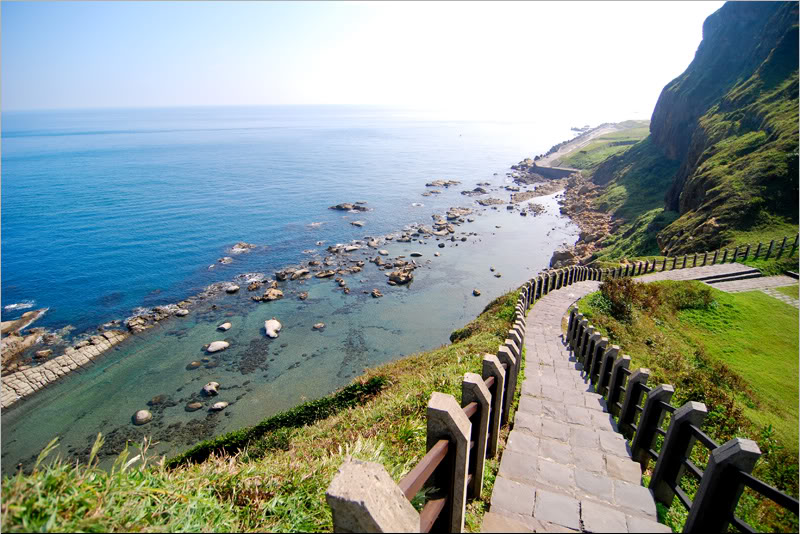
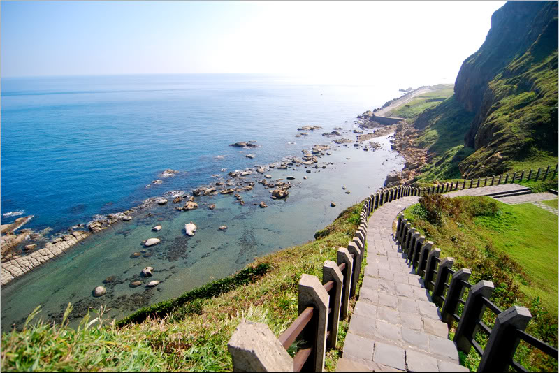

和平島公園
和平島原名社寮島，位於基隆東北一禹，是基隆港的門戶，同時也是北台灣最早有西方人足跡的地方，
亦是基隆最早有漢人入墾的所在地之一。此地早期原為凱達格蘭族的聚落，之後被列為軍事管制區，目前在沿海部份地區已開放設為和平島公園。
和平島公園的遊憩重點，就是園區內重要的海蝕地形景觀，位在海岸線旁的奇岩巨石，因長期受迎風面海蝕及風蝕影響，
造就了特殊的地形景觀，如海蝕崖、海蝕平台、海蝕溝、海蝕崖、風化窗、獅頭岩、熊頭岩等，
最著名的則是「豆腐岩」和「萬人堆」（蕈狀石）地形景觀，各種不同的海蝕地形，是小朋友們戶外教學最喜歡來的地方，
不僅可以真實看到課本上的圖片，也能實際的感受到自然的力量。
詳細資訊
廟口夜市
基隆「廟口小吃」位於基隆市中心區，而基隆廟口地興起則是與奠濟宮有關，奠濟宮何時出現廟口小吃，並無文獻記載，
不過可以想像，早年廟埕上常有香客往來，有時還有野台戲、江湖賣藝的表演，所以一定會跟著出現賣吃賣喝的流動攤販，
聚集效應而後興起一整個地段的繁榮，攤販數也越來越多，之後以仁三路為中心延伸到到愛三路及愛四路，
成為了聞名國內外的「基隆廟口」小吃，是帶動整個基隆觀光的重點。
秉持著「吃飯皇帝大」的精神，廟口夜市近年來經過重新規劃整修，整理過後的廟口小吃街，整條街變得井然有序、整齊美觀，
更於2010年獲交通部觀光局頒發「最美味夜市」、「最友善夜市」兩個獎項。而為了讓顧客不僅吃得飽還要吃的舒服，
不僅將廟口電線地下化，除去空中零亂的電路管線，換上地方味十足的燈籠，再加上各攤明亮的照明，還有整齊的攤位招牌，讓人感覺神清氣爽。
詳細資訊
九份老街
九份基山街又名「暗街仔」，是一條曲折狹窄的街道，早期這裡曾是最繁華的商業中心，
雜貨店、銀樓、理髮店、小吃店、皮鞋店、百貨店……各式商店林立，非常熱鬧，
而在這3.4公尺的小小街道裡，店家往往會撐起頂棚，使得街上不見天日，而當時的礦工們，
經常在下午到進入深夜後，便聚集於基山街上，因此這裡便有了「暗街仔」的稱著，今日，
基山街已成為採購藝品、名產必經要道，復古懷舊的街景，更成為新時代年輕人的踩街路線。
詳細資訊
忘憂谷
看山好，還是看海好？不用猶豫了，八斗子忘憂(望幽)谷步道給你兩全其美的享受！
沿著步道走來，可以看到綠草如茵的忘憂谷、波濤洶湧的基隆嶼還有層層疊疊的山脈，
當然，也可以下到潮間帶欣賞古老的化石、可愛的蝦兵蟹將，也能觀察特殊的海蝕地形。
不僅如此，身邊隨時有各種色彩繽紛的蝴蝶翩然飛舞，抬頭一望，也能看到氣宇軒昂的大冠鷲或黑鳶，簡直是海陸空超值套餐之旅。
除了看山看海，忘憂谷步道的稜頂涼亭及101高地也是看日出、夕陽與夜景的超棒地點，「忘憂」之名果然名符其實！
詳細資訊
國立海洋科技博物館
國立海洋科技博物館（簡稱海科館）位於基隆市東側的八斗子地區，西鄰八斗子、碧砂漁港、東接東北角海岸風景特定區，
有台2線（濱海公路）及台鐵鐵路深澳支線經過。現有建館基地約有48公頃，依山傍海，環境十分優美。
館區設施分為主題館區與研究及景觀設施，主題館區規劃設施包括：海洋科學及科技主題展示館、海洋生態展示館（水族館）、海洋劇場等。
主題館-共有八大展廳及一個特展廳，分別為兒童廳、深海展示廳、深海影像廳、海洋文化廳、
船舶與海洋工程廳、海洋科學廳、海洋環境廳，以多元角度介紹海洋相關知識，讓民眾透過前衛的互動式展品，
以寓教於樂的方式認識海洋科學、生態、文化，另設有行政中心與研究典藏中心。
詳細資訊
基隆港
基隆港位於基隆市中正區、台北市的東北角，三面環山， 由於鄰近基隆車站，顯得格外親切，
隨時可一睹其風采。您可在火車站前公車站牌等車時看到它；在海門天險或中正公園的山丘上觀望它；
亦可在仙洞巖上看到港口的貨櫃中心船隻作業情形，對喜愛與欣賞船隻郵輪等人士，真是一大快事！
詳細資訊
 
